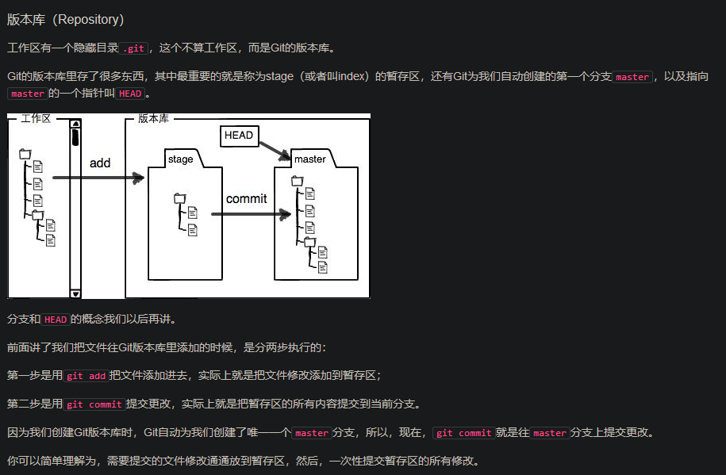

Git 使用介绍
原文地址：
所有的版本控制都只能针对文本内容，像WORD文件这样的二进制内容，只能做快照
首先这里再明确一下，所有的版本控制系统，其实只能跟踪文本文件的改动，比如TXT文件，网页，所有的程序代码等等，Git也不例外。版本控制系统可以告诉你每次的改动，比如在第5行加了一个单词“Linux”，在第8行删了一个单词“Windows”。而图片、视频这些二进制文件，虽然也能由版本控制系统管理，但没法跟踪文件的变化，只能把二进制文件每次改动串起来，也就是只知道图片从100KB改成了120KB，但到底改了啥，版本控制系统不知道，也没法知道
如果要真正使用版本控制系统，就要以纯文本方式编写文件
千万不要使用Windows自带的记事本编辑任何文本文件。原因是Microsoft开发记事本的团队使用了一个非常弱智的行为来保存UTF-8编码的文件，他们自作聪明地在每个文件开头添加了0xefbbbf（十六进制）的字符，你会遇到很多不可思议的问题，比如，网页第一行可能会显示一个“?”，明明正确的程序一编译就报语法错误，等等，都是由记事本的弱智行为带来的。建议你下载Notepad++代替记事本，不但功能强大，而且免费！记得把Notepad++的默认编码设置为UTF-8 without BOM即可
Git 背景
由Linus 创建，C 语言编写 ，最初目的用于linux内核管理
Git
CVS 和 SVN 都是 集中式的版本控制系统
GIT 是分布式的版本控制系统
集中式版本控制系统
版本库是集中存放在中央服务器的
分布式版本控制系统
没有“中央服务器”，每个人的电脑上都是一个完整的版本库
安装方法
linux 版本如果是 debian系的，直接
# apt update
# apt install git
windows系统可以去官网下载安装包
Git 使用方法
注意：所有的操作都要在有 .git 这个目录 的目录下面操作
创建和添加
创建空文件
进入该文件夹下面，初始化这个文件
# git init瞬间Git就把仓库建好了，而且告诉你是一个空的仓库（empty Git repository），细心的读者可以发现当前目录下多了一个.git的目录，这个目录是Git来跟踪管理版本库的，没事千万不要手动修改这个目录里面的文件，不然改乱了，就把Git仓库给破坏了。
- 向版本库添加文件
版本库，即我们刚才创建的文件夹，也称 repository
新建一个文件，放在版本库里，然后执行如下命令
git add testfile \\testfile 是我创建的测试文件
提交文件到仓库
# git commit -m "描述的信息" // -m 后面输入本次提交的说明，可以是任意内容
commit 相当于一个快照
commit 可以一次提交多个文件，前提是这个文件已经加入add
查看文件状态
# git status
这个命令可以看到修改的文件，以及未加入的文件（add）
# git diff testfile
这个命令可以查一个文件更改前后的不同
详解： diff --git a/test.txt b/test.txt ——对比两个文件，其中a改动前，b是改动后，以git的diff格式显示；
index 629d9c8..3d98a7f 100644 ——两个版本的git哈希值，index区域（add之后）的 629d9c8 对象和工作区域的 3d98a7f 对象， 100表示普通文件，644表示权限控制；
--- a/test.txt +++ b/test.txt ——减号表示变动前，加号表示变动后；
@@ -4,8 +4,9 @@ test line3. ——@@表示文件变动描述合并显示的开始和结束，一般在变动前后多显示3行，其中-+表示变动前后，逗号前是起始行位置，逗号后为从起始行往后几行。合起来就是变动前后都是从第4行开始，变动前文件往后数8行对应变动后文件往后数9行。 变动内容 ——+表示增加了这一行，-表示删除了这一行，没符号表示此行没有变动。
查看历史更改
# git log
显示从最近到最远的提交日志
回退文件版本
首先，Git必须知道当前版本是哪个版本，在Git中，用HEAD表示当前版本。上一个版本就是HEAD^，上上一个版本就是HEAD^^，当然往上100个版本写100个^比较容易数不过来，所以写成HEAD~100。
# git reset --hard HEAD^
指定回退到某个版本
# git reset --hard 1094a \\ 1094a 是 commit 提交时的id ，通过 git log 或者 git reflog 能查找到。版本号没必要写全，前几位就可以了！
版本库（Repository）

一个文件的状态为”Untracked”，代表没有add
要提交一个文件 ，一定要先 add ，然后才 commit 。 如果没有add ，即使commit了也不会有任何提交。 因为git 针对的是修改的内容，而不是文件！
丢弃修改
# git checkout -- readme.txt \\git checkout -- filename 命令中的--很重要，没有--，就变成了“切换到另一个分支”的命令
命令git checkout – readme.txt意思就是，把readme.txt文件在工作区的修改全部撤销，这里有两种情况：
一种是readme.txt自修改后还没有被放到暂存区，现在，撤销修改就回到和版本库一模一样的状态；
一种是readme.txt已经添加到暂存区后，又作了修改，现在，撤销修改就回到添加到暂存区后的状态。
总之，就是让这个文件回到最近一次git commit或git add时的状态
# git reset HEAD filename \\可以把暂存区的修改撤销掉（unstage），重新放回工作区
checkout 丢弃的是工作区的修改， reset HEAD 是丢弃暂存区的修改
文件已修改，未add到暂存区: git checkout – file可还原
文件已修改，并add到暂存区未commit： git reset HEAD file 可还原
checkout命令用于从历史提交(commit)（或者暂存区域）中拷贝文件到工作目录，也可用于切换分支
删除文件
当你删掉工作区的文件，但是版本库里面的历史文件还是存在的。如果要把历史文件记录也删除，执行如下操作
# git rm filename
# git commit -m "说明" \\rm 后记得commit一下
另一种情况是工作区删除错了，但是版本库中有保留的文件，可以把误删的文件恢复
# git checkout -- filename \\git checkout其实是用版本库里的版本替换工作区的版本，无论工作区是修改还是删除，都可以“一键还原”。
生成密钥对
# ssh-keygen -t rsa -C "email@xxx.com"
密钥对的位置一般位于：/用户目录/.ssh/
id_rsa 是私钥，不能泄漏
id_rsa.pub 是公钥，可以上传到github上面
友情提示，在GitHub上免费托管的Git仓库，任何人都可以看到喔（但只有你自己才能改）（现在github被微软收购，免费账户可以创建无限的私有仓库，所以把仓库改成私有仓库别人就看不到了）。所以，不要把敏感信息放进去。
如果你不想让别人看到Git库，有两个办法，一个是交点保护费，让GitHub把公开的仓库变成私有的，这样别人就看不见了（不可读更不可写）。另一个办法是自己动手，搭一个Git服务器，因为是你自己的Git服务器，所以别人也是看不见的。这个方法我们后面会讲到的，相当简单，公司内部开发必备。
分支
Git 默认有一个 master 的主分支
新建分支
# git checkout -b dev \\ 创建一个 dev 的分支 , -b 表示创建并切换
上面的命令相当于下面两条命令
# git branch dev
# git checkout dev
# git branch \\显示所有分支， 当前分支会以星号表示
合并分支
# git merge dev \\ merge 用于合并指定分支（dev）到当前分支（需要事先切换）
删除分支
# git branch -d dev
可视化查看git log
# git log --graph --pretty=oneline --abbrev-commit
合并分支的另外一种情况
先切回master分支，准备合并dev分支，请注意–no-ff参数，表示禁用Fast forward。
通常，合并分支时，如果可能，Git会用Fast forward模式，但这种模式下，删除分支后，会丢掉分支信息。
如果要强制禁用Fast forward模式，Git就会在merge时生成一个新的commit，这样，从分支历史上就可以看出分支信息。
# git merge --no-ff -m "merge with no-ff" dev
忽略文件
在Git工作区的根目录下创建一个特殊的.gitignore文件，然后把要忽略的文件名填进去，Git就会自动忽略这些文件
文件内容如下：
# Windows:
Thumbs.db
ehthumbs.db
Desktop.ini
# Python:
*.py[cod]
*.so
*.egg
*.egg-info
dist
build
# My configurations:
db.ini
deploy_key_rsa
配置别名
# git config --global alias.st status \\ 将 git status 替换成 git st
# git config --global alias.unstage 'reset HEAD' \\git reset HEAD test.py = git unstage test.py
# git config --global alias.lg "log --color --graph --pretty=format:'%Cred%h%Creset -%C(yellow)%d%Creset %s %Cgreen(%cr) %C(bold blue)<%an>%Creset' --abbrev-commit"
= git lg
设置用户名和邮箱
git config --global user.name "Firstname Lastname"
git config --global user.email "your_email@Example.com"
这些命令 会在 "~/gitconfig " 中形成.
这里设置的 姓名 和 邮箱 地址 会用在 Git的 提交日志中.可以让命令的输出有 更高 的可读性
git config --global color.ui auto 配置Git
配置Git的时候，加上–global是针对当前用户起作用的，如果不加，那只针对当前的仓库起作用。
每个仓库的Git配置文件都放在.git/config文件中
Github
github 添加同步仓库
在github上面创建一个空的仓库
在自己的电脑执行如下命令
# git remote add origin git@github.com:username/repository.git
\\ username 为你github的用户名；repository为你github仓库的名称；origin 是远程库的意思，这是git的默认的叫法，可以改成别的
推送内容的远程库（github）
把本地库的内容推送到远程，用git push命令，实际上是把当前分支master推送到远程。
由于远程库是空的，我们第一次推送master分支时，加上了-u参数，Git不但会把本地的master分支内容推送的远程新的master分支，还会把本地的master分支和远程的master分支关联起来，在以后的推送或者拉取时就可以简化命令。
要关联一个远程库，使用命令git remote add origin git@server-name:path/repo-name.git；
关联后，使用命令第一次推送master分支的所有内容:
git push -u origin master
此后，每次本地提交后，只要有必要，就可以使用命令 git push origin master 推送最新修改；
同步仓库
如果Github上面的仓库有内容，需要先pull下来，然后才能push上去
git pull --rebase origin master
特别的：本地没有add 的文件，是不会同步到GitHub上面的
克隆仓库
# git clone git@github.com:username/repo-name.git你也许还注意到，GitHub给出的地址不止一个，还可以用 https://github.com/michaelliao/gitskills.git 这样的地址。实际上，Git支持多种协议，默认的 git://使用ssh ，但也可以使用https等其他协议。
使用https除了速度慢以外，还有个最大的麻烦是每次推送都必须输入口令，但是在某些只开放http端口的公司内部就无法使用ssh协议而只能用https。